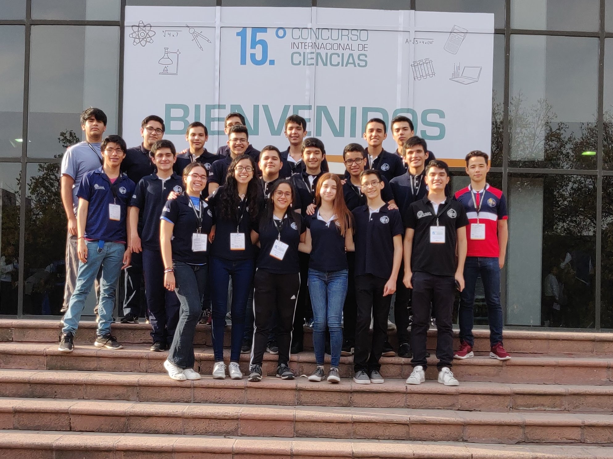

La Preparatoria 9 de la UANL ha sido en los últimos años uno de los lugares donde se siembran talentos y grandes prospectos para representar tanto a la institución, al estado y al país en competencias de matemáticas y programación, y más importante aún formando a futuros profesionistas con bases sólidas en sus áreas y futuros prometedores.
Las matemáticas que verás aquí no son los típicos ejercicios aritméticos de realizar operaciones, nuestro taller se enfoca en desarrollar un pensamiento creativo para resolver problemas de manera estructurada para entender realmente el por qué de las cosas. De la misma manera usamos herramientas tanto matemáticas como computacionales para llevar más allá ese pensamiento creativo y plantear soluciones reales a los problemas que se presentan y cualquier reto en general.
A lo largo de los años mucha gente brillante ha pasado por aquí y ha contribuido a nuestra historia, puedes ver algunos de ellos en nuestro salón de la fama y seguramente conocerás a algunos de ellos como tus entrenadores.Aquí repasamos algunos de los más recientes logros